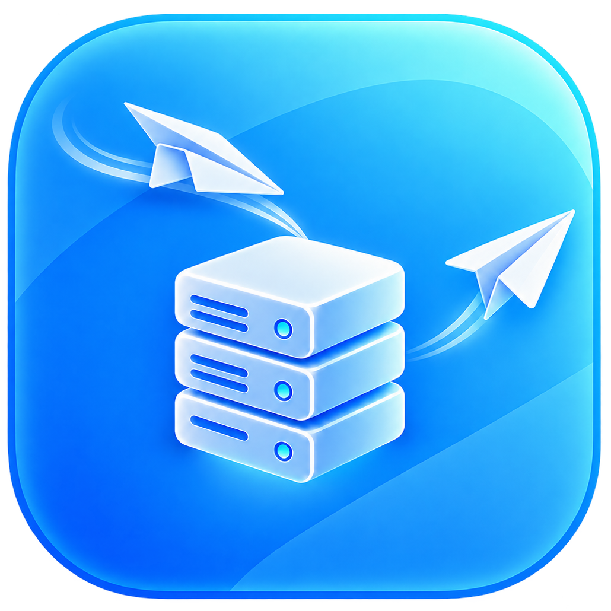

文字和多个附件
发送给自己或其他账号。附件在接收端完整下载并校验，历史、正文搜索和已读状态可在本机查看。
Windows · 自行部署 · 1.0.2
把文字和文件发送到自己的设备，或发送给同一服务器上的其他账号。Drop 在托盘中同步，离线后自动补齐，让信息在你配置的设备间接续。

Drop 使用你配置的 HTTPS 服务器。每台客户端保存本机副本，服务器负责接收、设备同步和备份。
发送给自己或其他账号。附件在接收端完整下载并校验，历史、正文搜索和已读状态可在本机查看。
窗口关闭或最小化后收起到托盘。Windows 通知与托盘图标闪烁可独立关闭；打开窗口时使用任务栏提示。
服务器数据库和附件加密保存。独立恢复包与恢复密码用于恢复备份；本地和 Google Drive 密文备份分别记录完成状态。
由部署者在服务器本机浏览器授权。普通 Drop 客户端不需要 Google 登录，这个网站也不接收 Google 授权。
仅申请 drive.appdata，用于本应用专用数据目录中的备份上传、列表、下载和明确删除。不会读取你的其他 Drive 文件、联系人或邮件。应用数据目录在普通 Drive 文件列表中不可见。
服务器存储与备份加密并非端到端加密：服务器运行时会处理明文；客户端本机消息和附件默认以普通文件或数据库保存。请使用你信任的服务器，单独保管恢复包和密码。
项目提供 Windows x64 与 Win32 程序。服务器可以前台运行，也可以部署为 Windows 服务；实际证书、账号、备份目录和访问范围由部署者配置。
查看项目源码与部署文档。如需报告问题或联系维护者，请使用项目反馈页；不要提交密码、令牌、密钥或私人消息内容。
本机实现及记录的验收已完成，跨电脑、长期持续运行和实际部署环境仍在试用验证中。Google 正式发布与 Google 应用验证是不同事项，本站不表示已通过 Google 验证。